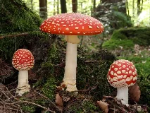
Amanite tue-moucheswiki-fr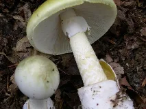
Amanite phalloïdewiki-fr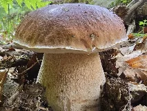
Cèpe de Bordeauxwiki-fr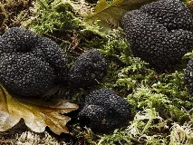
Truffewiki-fr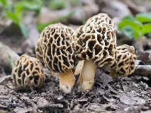
Morillewiki-fr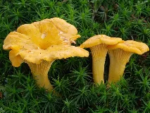
Girollewiki-fr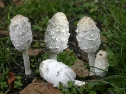
Coprin cheveluwiki-fr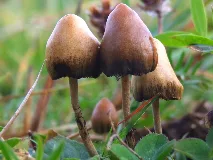
Psilocybewiki-fr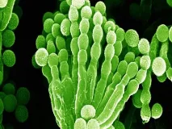
Pénicilliumwiki-fr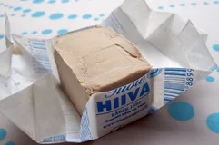
Levure de boulangerwiki-fr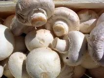
Champignon de Pariswiki-fr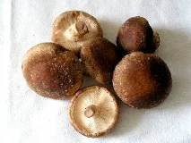
Shiitakewiki-fr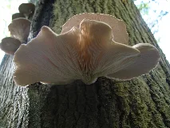
Pleurote en huîtrewiki-fr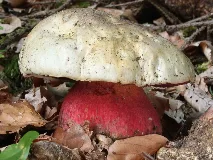
Bolet Satanwiki-fr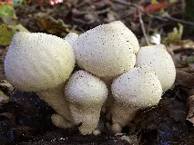
Vesse-de-loupwiki-fr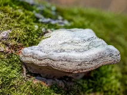
Amadouvierwiki-fr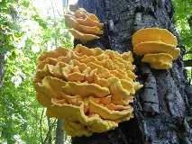
Polypore soufréwiki-fr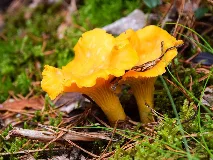
Chanterellewiki-fr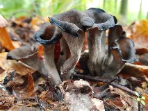
Trompette de la mortwiki-fr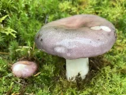
Russule charbonnièrewiki-fr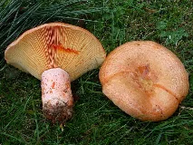
Lactaire délicieuxwiki-fr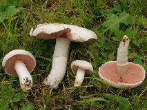
Rosé des préswiki-fr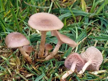
Clitocybewiki-fr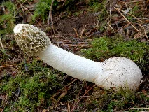
Phallus impudicuswiki-fr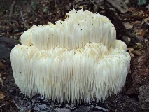
Hydne hérissonwiki-fr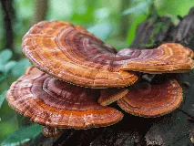
Reishiwiki-fr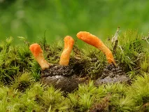
Cordycepswiki-fr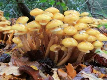
Armillairewiki-fr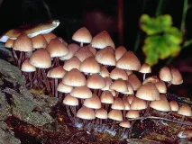
Mycènewiki-fr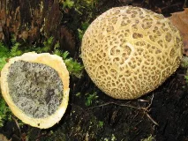
Sclérodermewiki-fr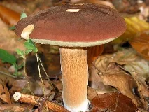
Bolet baiwiki-fr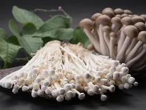
Enokibing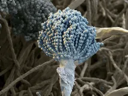
Aspergillusbing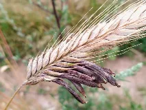
Ergot du seiglewiki-fr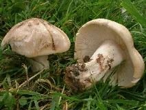
Tricholome de la Saint-Georgeswiki-fr